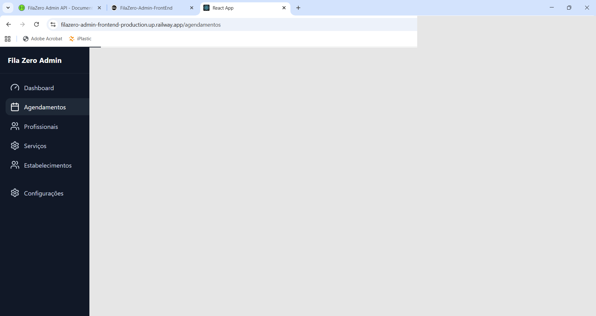
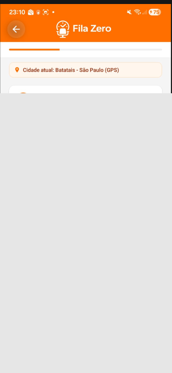

1 fluxo
Do agendamento ao atendimento, sem trocar de sistema.
Operacao enxuta para negocios de atendimento
O Fila Zero conecta cliente, recepcao e equipe em um fluxo unico de agendamento. Voce ganha previsibilidade no dia, reduz faltas e acelera decisoes no painel.
1 fluxo
Do agendamento ao atendimento, sem trocar de sistema.
2 interfaces
Cliente no app e equipe no painel, totalmente sincronizados.
100% online
Operacao acessivel em qualquer dispositivo conectado.
Como funciona
Servico, horario e profissional em poucos toques, com jornada direta e intuitiva.
Equipe visualiza agenda, confirma status e acompanha o dia sem retrabalho.
Menos ruido operacional e mais foco no que gera receita: atender bem e com constancia.
Recursos principais
Visualize compromissos por dia e tome decisoes com contexto.
Evite desencontro de informacao e mantenha a operacao alinhada.
Aplicativo com fluxo rapido para marcar e acompanhar atendimentos.
Estrutura pensada para manter qualidade mesmo com aumento de demanda.
Visao administrativa
O time acompanha agenda, profissionais e indicadores operacionais em um unico lugar. Isso reduz gargalos e facilita priorizar o que importa em cada turno.


Experiencia do cliente
O cliente encontra disponibilidade, escolhe o servico e acompanha a jornada sem friccao. Resultado: mais confianca no processo e mais presenca nos horarios marcados.
Proximo passo
Envie seus dados e retornamos para agendar uma demonstracao guiada, com foco nos gargalos reais do seu atendimento.